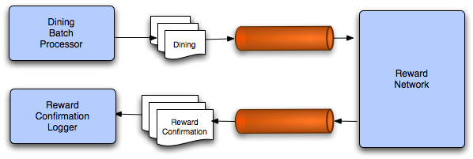

jms (optional): Simplifying Messaging with Spring JMS
Introduction
In this lab you will gain experience with Spring’s JMS support. You will
complete an implementation of a DiningBatchProcessor that sends dining
event notifications to the reward network as messages. You will also
configure a logger to receive the reward confirmations asynchronously.

-
How to configure JMS resources with Spring
-
How to send messages with Spring’s JmsTemplate
-
How to configure a Spring message listener container
-
How to delegate Message content to a plain Java object
- JmsTemplate
Estimated time to complete: 45 minutes
Note
Refer to the diagram as you proceed through the lab - we get you to implement the code in the same order as the flow.
You will have to implement every step before you can run anything. Only at the end will you know if it all works.
Quick Instructions
Quick instructions for this exercise have been embedded within the lab
materials in the form of TODO comments. To display them, open the
Tasks view (Window >> Show View >> Tasks (not Task
List)).
Detailed Instructions
The instructions for this lab are organized into five sections. In the first section, you will establish the messaging infrastructure. In the second section, you will learn how to send dining notifications as messages. In the third and fourth sections, you will define and configure listeners to enable message reception by Message-Driven POJOs. In the final section, you will complete a test case to verify that the batch of dining notifications is successfully producing the corresponding confirmation messages.
Providing the messaging infrastructure
In this section you will configure the necessary infrastructure to support the Reward Network in a messaging environment.
Define the ConnectionFactory
(TODO-01) In JMS-based applications, the Connection is obtained from a
ConnectionFactory. Spring’s JMS support will handle the resources, but
it does require a ConnectionFactory bean definition. In this step you
will review what we have setup for you.
Open the JmsInfrastructureConfig class in the config package. There
is a bean definition to create an instance of
org.apache.activemq.ActiveMQConnectionFactory. Note the brokerURL
property.
Tip
For this simple lab, you will be using an embedded broker with persistent queues disabled. Also Spring will handle shutdown of the Broker, so ActiveMQ doesn’t have to. Hence the
brokerURLis'vm://embedded?broker.persistent=false&broker.useShutdownHook=false'.
Once you’re happy you understand this bean definition, move on to the next step!
Define the message queues
(TODO-02) Now you will need to create two queues, one for handling
dining notifications and the other for handling the reward
confirmations. Create two bean definitions of type
org.apache.activemq.command.ActiveMQQueue and call them "diningQueue"
and "confirmationQueue". Provide a unique name for each queue using
constructor injection. You can use any names you want (we suggest
"rewards.queue.dining" and "rewards.queue.confirmation", which are
the names used in the solution, or something similar if you prefer), but
keep track of the names for use in a later step.
Warning
Remember the queue names you select, you will need them later. If you specify the wrong queue name later, the messages are quietly ignored. You DO NOT get an error. Using the wrong queue-names is the most common error in this lab.
You are now ready to move on to the next section.
Sending Messages with JmsTemplate
In the previous section you configured a queue for dining notifications. In this section you will provide the necessary code to send dining notifications to that queue from a batch processor.
Establish a dependency on JmsTemplate
(TODO-03) Navigate to the JmsDiningBatchProcessor within the
rewards/jms/client package. This class will be responsible for sending
the dining notifications via JMS. Provide a field for an instance of
Spring’s JmsTemplate so that you will be able to use its convenience
method to send messages. Add a setter or constructor to allow you to set
this dependency later via dependency injection.
Implement the batch sending
(TODO-04) Now complete the implementation of the processBatch(..) method
by calling the one-line convenience method provided by the JmsTemplate
for each Dining in the collection.
Note
Here you can rely on the template’s default message conversion strategy. The
Dininginstance will be automatically converted into a JMSObjectMessage.
Define the template’s bean definition
(TODO-05) Open the ClientConfig class within the config package.
Define a bean definition for the JmsTemplate. Keep in mind that it
will need a reference to the ConnectionFactory as well as its
destination.
Once you have defined the bean, inject it into the
JmsDiningBatchProcessor that is already defined in that same file.
Then move on to the next section.
Configuring the RewardNetwork as a message-driven object
In the previous section you implemented the dining notification sending.
In this section you will provide the necessary configuration for
receiving those messages and delegating their content to the
RewardNetwork. You will do this using an annotation-driven approach.
Define the JMS Message Listener
(TODO-06) Open the RewardNetworkImpl class within the
rewards.internal package. Locate the rewardAccountFor method, this
is the method that we want to use to process the JMS message and create
and return a JMS response message. But to keep our code completely
decoupled from the JMS API, we will use Spring annotations to simply
indicate the incoming and outgoing JMS destinations.
Place the @JmsListener annotation above the rewardAccountFor method.
Within this annotation, set the name of the destination that you created
earlier, the one that will contain the Dining objects. (Recall that in
JMS, the term destination refers to both where messages come from as
well as where they go to.) Be sure to use the actual destination / queue
name and NOT the bean ID. There are many other setting that you can
control on this annotation, but the destination is the only one we need
to set now.
Note that this method returns a RewardConfirmation object used to
record information about the reward. We would like to take this returned
object and send it back out to a separate JMS destination. Use the
@SendTo annotation to define the destination to send this confirmation
to. As before, be sure to use the actual destination / queue name, not
the bean ID.
At this point, the rewardAccountFor method is "wired" to receive JMS
traffic as Dining objects and return RewardConfirmation objects. But we
still have to setup a few more pieces before our system will work. Move
on to the next step.
Receiving the asynchronous reply messages
In the previous section, you configured the reward network to receive messages and also to reply automatically to a queue with reward confirmations. Now you will define another Message-Driven POJO so that those confirmations will be received and logged.
Define a second JMS Listener
(TODO-07) Open RewardConfirmationLogger in the rewards.jms.client
package. This existing logic is designed to simply listen for
RewardConfirmation objects on the confirmations queue and keep track of
how many we receive. However, it is not yet "wired" into the JMS
infrastructure to do this work.
Place the @JmsListener annotation above the log method. Within this
annotation, set the name of the destination that you created earlier,
the one that will contain the RewardConfirmation objects. Be sure to use
the actual destination / queue name and NOT the bean ID. Note that this
method does not return any return value, so you do not need to supply a
@SendTo.
Enable Asynchronous Message Reception
In the previous sections, you configured two method to respond to JMS
input. However there are still some housekeeping items that we need to
setup to hook all the pieces together - we have to tell Spring to look
for and process the @JmsListener annotations, and we need to setup a
factory that can produce the listener containers needed to wrap the JMS
processing endpoints.
Define a JMS Listener Container Factory Bean
(TODO-08) Return to the JmsInfrastructureConfig class and add a @Bean
definition. The bean we want to create should have the ID of
jmsListenerContainerFactory, and should instantiate and return a
DefaultJmsListenerContainerFactory object. This Factory is used by
Spring whenever it needs to create a "Listener Container" for one of our
@JmsListener-annotated methods. We could provide separate beans for
each @JmsListener-annotated method, but they would typically be
configured exactly the same, so providing Spring a factory to use is
much less work.
The DefaultJmsListenerContainerFactory has many properties that we can
set, but for our exercise we really only need to provide a reference to
the connection factory. You defined this bean in one of the first steps,
so simply set this dependency before returning.
(TODO-09) Finally, we need to tell Spring to look for the @JmsListener
and @SendTo annotations we’ve placed in the code, and to wrap these in
proxies associated with the relevant JMS Listener Containers. Simply add
a @EnableJms annotation on the top of any @Configuration class to
turn this feature on.
Testing the message-based batch processor
At this point the messaging configuration should be fully established. It is now time to verify that configuration. Luckily a test case is already provided with all but two remaining tasks to complete.
Send the batch of dining notifications
(TODO-10) Navigate to the DiningBatchProcessorTests in the
rewards/jms/client package in the src/test/java folder. Notice that
the class makes use of Spring’s support for integration testing and that
the diningBatchProcessor and confirmationLogger fields will be
automatically injected using the @Autowired annotation..
In the testBatch() method, a number of Dining objects are being
instantiated and added to a List. Here you simply need to invoke the
method that you implemented previously in the JmsDiningBatchProcessor
class.
(TODO-11) Finally, provide an assertion to verify that the entire batch
was sent and that the confirmationLogger has received the same number
of replies. Run this test, it should pass at this point. If you receive
a failure, examine the exception message carefully, backtracking your
steps as needed to produce a successful run.
Tip
If you are having trouble and not receiving any useful error messages, check your queue names carefully - ActiveMQ quietly drops messages sent to a queue it doesn’t recognize. Next lower the log level for
org.springframework.jmsin thelogback.xmlfile inrewards-common. If that is still not helpful, then add breakpoints in some logical places (consider where you are sending and receiving messages) and step through with Eclipse’s debugger.
Once your tests pass, you have completed this lab. Congratulations!